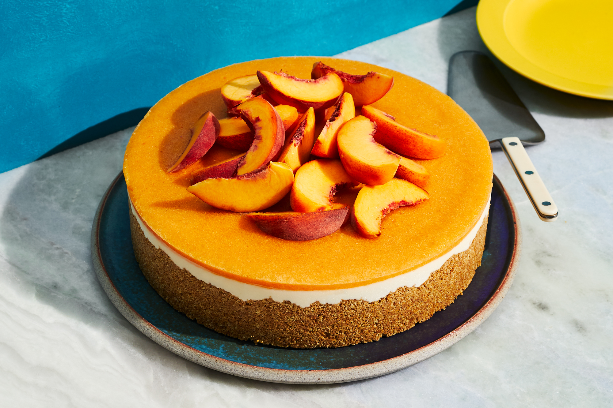

CHEESECAKE

No-Bake Peach Cheesecakes capture everything there is to love about summer. Sweet peaches, crunchy pecans, and no
need to bake a thing!
You can make make this No-Bake Peach Cheesecake with frozen peaches – no problem, but if you can get your hands
on some gorgeous, ripe, fresh peaches, that’s totally the way to go.
INGREDIENTS
For the Crust
- 1 cup graham cracker crumbs
- 1/3 cup pecan halves or candied pecans, finely chopped
- 1/2 teaspoon ground cinnamon
- 4 tablespoons unsalted butter, melted
For the Cheesecake Filling
- 16 ounces cream cheese, room temperature
- 14 ounce can sweetened condensed milk
- 2 teaspoons pure vanilla extract or vanilla bean paste
- 8 ounce container frozen whipped topping, thawed
For the Peach Compote
- 1 pound fresh or frozen sliced peaches
- 1/2 cup packed light brown sugar
- 3 tablespoons water
- 1/4 teaspoon pure vanilla extract
- 1 teaspoon ground cinnamon
For the Garnish
- whipped topping
- candied pecans
PREPARATION
- In a medium bowl, stir together the crust ingredients. Evenly distribute the crust crumbs between 8
individual serving dishes. Press the crumbs into the bottom of the dishes and place the dishes into the
refrigerator
- In the bowl of a stand mixer fitted with the paddle attachment, or in a large bowl with an electric mixer,
beat the cream cheese for 3 minutes
- Turn the mixer down to low and slowly drizzle in the sweetened condensed milk. Stir in the vanilla. Scrape
the sides of the bowl and mix for an additional 1-2 minutes
- Use a rubber spatula to fold in the whipped topping
- Spoon or pipe the cheesecake filling into the prepared serving dishes and refrigerate
- In a medium saucepan over low-medium heat, stir together the peaches, brown sugar, water, vanilla and
cinnamon. Cook over low heat until the liquid has reduced and thickened, stirring every few minutes. It will
take about 15-20 minutes for your compote to thicken. Allow compote to cool completely. Transfer the compote
to a lidded container and refrigerate until you're ready to serve
- When you're ready to serve, top each cheesecake with compote, whipped topping, and candied pecans.
Refrigerate leftover cheesecake for up to 3 days
- Enjoy!